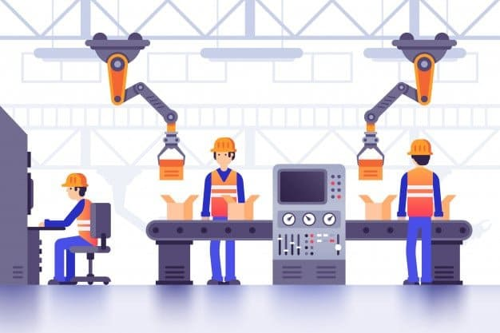
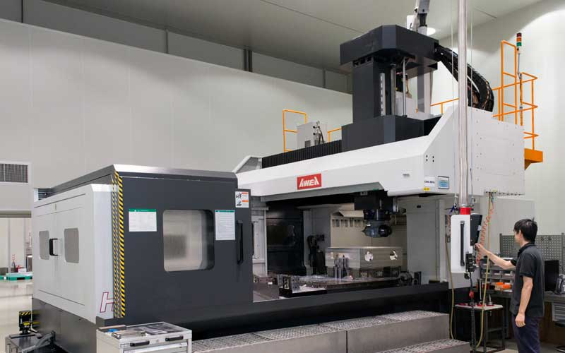
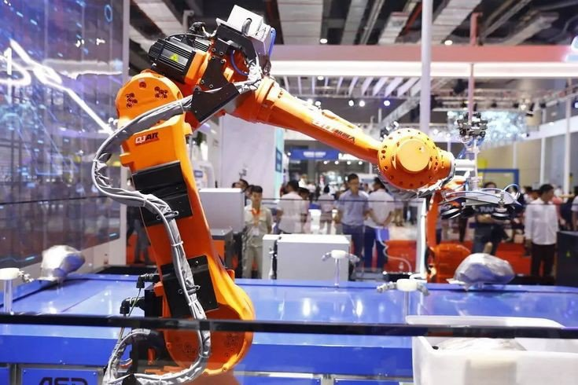

Proses produksi adalah serangkaian aktivitas atau tahapan yang digunakan untuk mengubah bahan mentah (*raw material*) menjadi produk jadi yang memiliki nilai tambah. Proses ini mencakup perencanaan, pengendalian, dan pelaksanaan produksi agar produk sesuai dengan spesifikasi dan kebutuhan konsumen.
Mengandalkan tenaga manusia untuk melakukan proses produksi. Contoh: Kerajinan tangan.
Menggunakan mesin-mesin dalam proses produksi, tetapi masih membutuhkan operator manusia. Contoh: Mesin bubut, mesin milling.
Menggunakan sistem otomatis seperti robotik dan *Computer Numerical Control* (CNC). Contoh: Pabrik perakitan mobil.
Proses yang menggunakan mesin seperti mesin bubut, mesin frais, dan CNC.
Proses mencetak logam cair ke dalam cetakan dan membiarkannya membeku. Contoh: Pengecoran aluminium untuk blok mesin.
Proses deformasi plastik dari bahan mentah menjadi bentuk yang diinginkan tanpa menghilangkan material.
Proses menyambungkan dua bagian logam dengan cara mencairkan material.
Menggabungkan beberapa komponen menjadi produk akhir.
Meningkatkan efisiensi dan mengurangi kesalahan manusia.
Menghubungkan mesin-mesin dalam satu sistem yang dapat dipantau secara real-time.
Mesin yang dapat dikendalikan secara otomatis dengan program komputer.